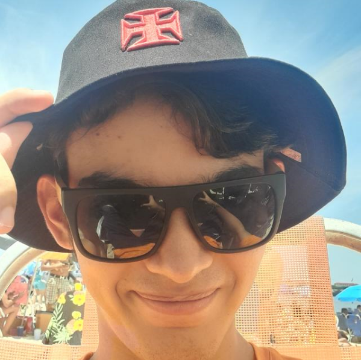
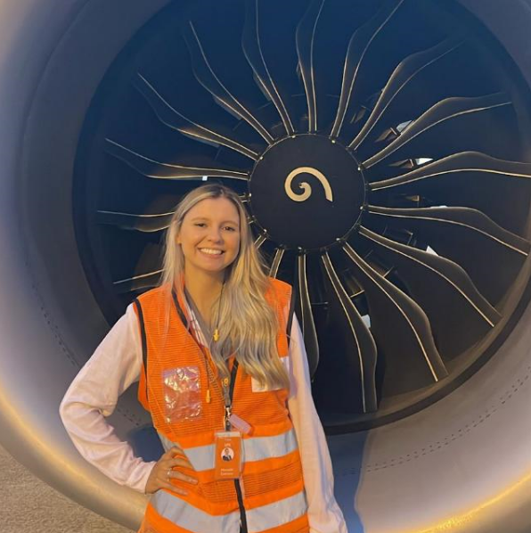
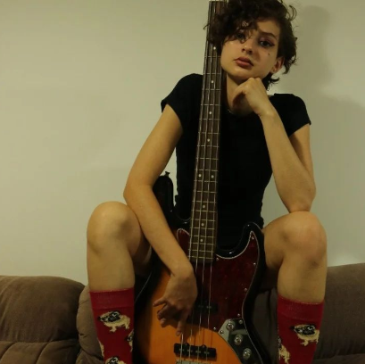
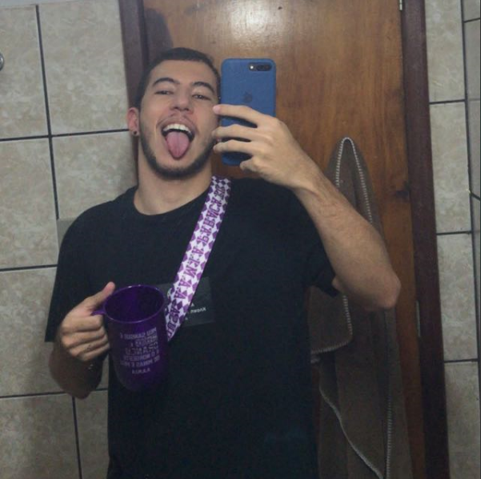
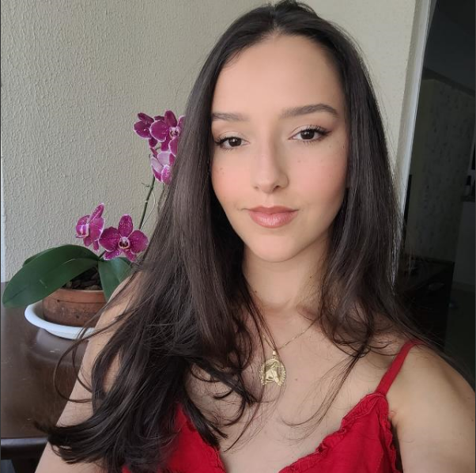

🏂 Zoi Alves
Sem muita enrolação já apresentamos a maior estrela da noite. Ninguém conhece bem os limites de
suas habilidades, mas muitos dizem que terem testemunhado essa mente resolver cálculos complexos
com elevado nível de álcool no sangue. Outros, testemunharam seu lado atlético no parkour.
Dotado de Skins em qualquer esporte já criado pelo homem e em qualquer conhecimento que a
humanida conhece ou virá a conhecer. Zoi nunca falha!

⛄ Mr. Farinha
Fundador e o organizador do primeiro evento de confraternização, Nathan Farinha, é a mente por
trás da criação, mas dessa vez ficou somente pela participação. "Eu vou pra comer e jogar um
truco", declarou.
Muito se espera de sua atuação depois de um bom vinho.
⛄ Mrs. Caetano Farinha
Por incompatibilidade de contrato e divergências na assinatura de contratos, Moniele Caetano não
esteve presente na primeira edição do evento, mas a novidade desse ano promete. Em outros
momentos declarou que já está confirmada em todas as outras futuras edições.

✨ Luh Swift
Todo evento que se preze tem sua estrela pop, e eis a nossa. Como Taylor Swift ainda não é digna
para comparecer, trazemos a ilustre presença da sua fã número 1. Será que Luana controlará a
Playlist?
🍁 Pedro
É nerd do TI que você pediu? Mas não se deixe enganar, apesar do seu trabalho consertando
impressoras, Pedro é a personificação de um maravilhoso m4c0nh3ir0. Especilaista em driblar a
segurança do evento, Pedro (que não é Parker) já prometeu "levar o entreterimento da festa"
👌
🎸 Juliana
A única capaz de laçar e dominar o maravilhoso coração de Pedro, Juliana está presente desde os
primóridos da primeira edição. Já garantiu ser a última a deixar o evento e declarou "Chega
dessa paumoalgem dos amigos do meu marido!".

🍄 Luigi Avelar
Nossa cota medb0qu3t3. Luigi já garantiu que vem para fazer história. "Natal é santo, mas eu não
sou", declarou. Resta saber o que um jovem que não vê os amigos a tempos é capaz!

🍻 Gabi Advogata
Sem saber o que esprar de certos convidados... Trouxemos nossa advogada. Mas ela mesma da
garantiu "Não vou responder nem por mim. Vocês que se virem"

🎅 ???
Afinal de contas quem é esse? Não sabemos ao certo, por isso em último. Mas menino peralta que
é, prometeu dar um surra em todo mundo na sinuca, truco e poker. Seria o retorno do Dealer?